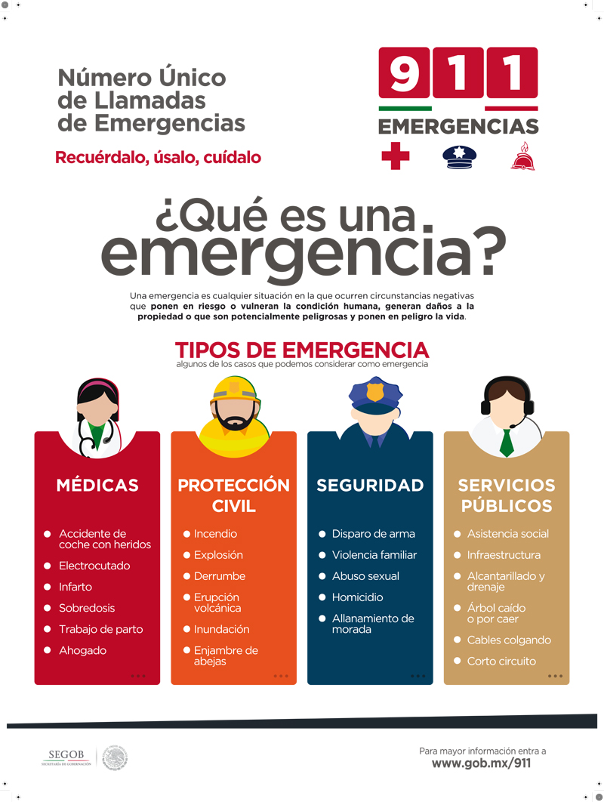

Emergencias comunes
Incendios
En caso de incendio, aléjate del lugar y busca un sitio seguro.
Accidentes
Si ocurre un accidente, evita mover a una persona herida si no es necesario y solicita ayuda.
Emergencias médicas
Si una persona necesita atención médica urgente, solicita ayuda a los servicios de emergencia.
Desastres naturales
Durante un desastre natural, conserva la calma y sigue las indicaciones de las autoridades.